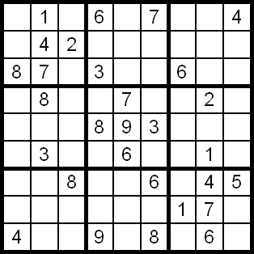

Modelling with Essence'
last update: June 29, 2007
Essence' is a declarative modelling language to specify constraint
problems. The problem specification is usually stored in a file with
the ending .cm and the parameters in a
.param file. An Essence' file consists of the following parts:
- Header (stating the version of Essence')
- Declarations (of constants, parameters, domains, decision
variables) [optional]
- Constraints [optional]
In the following we give some examples to illustrate how to use Essence' for modelling
CSP problems. This page is updated and extended frequently.
- A Simple Example: Send More Money
(basic model structure)
- An Advanced Example: Sudoku
(using matrix datastructures, universal quantifiers)
back
1. A Simple Example: Send more money
Let's construct an example by modelling the
Send More Money problem,
where one has to find a
solution to the following sum where every letter stands for a distinct
number between 0 and 9:
S E N D +
M O R E
----------
M O N E Y
We start with the header
Our decision variables are S, E, N,
D, M, O, R, Y which are in the domain of 0..9. We state that
S and M must not equal zero and define two
domains: one reaching from 0..9 and the other from 1..9. Domains and
constants can be defined by the letting statement:
ESSENCE' 1.0
letting DOMAIN0 be domain int(0..9)
letting DOMAIN1 be domain int(1..9)
|
Now we can define our decision variables that range over domains
DOMAIN0
and DOMAIN1 by using the find statement.
ESSENCE' 1.0
letting DOMAIN0 be domain int(0..9)
letting DOMAIN1 be domain int(1..9)
find S,M : DOMAIN1,
E,N,D,O,R,Y : DOMAIN0
|
All declarations have been done now and we can define our
constraint. The constraints are stated after such that:
ESSENCE' 1.0
letting DOMAIN0 be domain int(0..9)
letting DOMAIN1 be domain int(1..9)
find S,M : DOMAIN1,
E,N,D,O,R,Y : DOMAIN0
such that
1000*S + 100*E + 10*N + D
+ 1000*M + 100*O + 10*R + E =
10000*M + 1000*O + 100*N + 10*E + Y
|
The code for the Send more money problem can be found here.
2. Advanced Example: Sudoku
Sudoku is a popular puzzle: assign each field
of the 9x9 board a number between (1..9) such that every row, column and 3x3 box contains different
numbers. A sample sudoku puzzle is given below.
|

|
One way of modelling this problem is to encode every field of the board as a decision variable
ranging from (1..9). To specify the constraints on the rows and columns of the board more easily,
we collect all decision variables by a matrix(array) datastructure: we define a two-dimensional
matrix (array) board, whose indices both range from (1..9), giving us a representation
of the 9x9 board.
This means that board[2,3] holds the value of the field positioned in row 2 at column 3 of the board
(in the example to the right board[2,3] is assigned the value 2).
To make our lives easier, we explicitly define the domain (1..9) to be RANGE.
Since each decision variable of the matrix (also) ranges from (1..9), the matrix-elements' domain is specified
by the keyword of to be RANGE.
So we get the first piece of our Essence' Sudoku-problem-model as follows.
|
ESSENCE' 1.0
letting RANGE be domain int(1..9)
find board: matrix indexed by [RANGE, RANGE] of RANGE
|
Let us now focus on the constraints for the puzzle: the first constraint states that
each row of the board has to contain different values. This can be done by imposing
the alldifferent constraint on every row of board. We can
either write down alldifferent(board[1]), ... alldifferent(board[9]),
or just collect these constraints in a universal quantification, using forall.
forall is somewhat similiar to for-loops in
programming languages such as Java: in our example below it states that forall rows,
where row can take any value between (1..9), the expression
after the . has to hold. So it just corresponds to writing down all 9 cases
of alldifferent(board[1]), ... alldifferent(board[9]).
ESSENCE' 1.0
letting RANGE be domain int(1..9)
find board: matrix indexed by [RANGE, RANGE] of RANGE
such that
forall row : int(1..9) .
alldifferent(board[row])
|
Then we want to impose alldifferent on all columns of the board.
Unfortunately, Essence' does not allow us to solely access the columns of a
matrix without specifying the exact row of the matrix. This means, that there is
no expression such as boards[_,1] to represent column 1, for instance.
But we can use a trick: we define another matrix, columns,
that holds the same elements as board, but with the columns switched
with the rows. The example below illustrates the idea:
We can then impose alldifferent on every row of columns which corresponds to
imposing alldifferent on the columns of board.
ESSENCE' 1.0
letting RANGE be domain int(1..9)
find board: matrix indexed by [RANGE, RANGE] of RANGE,
columns : matrix indexed by [RANGE, RANGE] of RANGE
such that
forall row : int(1..9) .
alldifferent(board[row])
forall row,col : RANGE .
columns[col,row] = board[row,col],
forall col : RANGE .
alldifferent(columns[col])
|
Now we have imposed alldifferent on both the rows and columns of
the board. It remains to state that every 3x3 box of the board contains
9 different numbers. This is quite hard to state generally. One way would be to
define another matrix with each box as row and impose alldifferent
on it, just as we have done with the columns. Another way is to simply specify
that no element in a 3x3 box may be equal to another. This is
expressed by a double-nested forall expression.
ESSENCE' 1.0
letting RANGE be domain int(1..9)
find board: matrix indexed by [RANGE, RANGE] of RANGE,
columns : matrix indexed by [RANGE, RANGE] of RANGE
such that
forall row : int(1..9) .
alldifferent(board[row])
forall row,col : RANGE .
columns[col,row] = board[row,col],
forall col : RANGE .
alldifferent(columns[col]),
forall i,j : int(0..2) .
forall col1,col2,row1,row2 : int(1..3) .
((col1 != col2) /\ (row1 != row2)) =>
(board[row1+(i*3), col1+(j*3)]
!= board[row2+(i*3), col2+(j*3)])
|
Now we need to specify initial values for our sudoku. Since every sudoku has
different values, these constants are parameters and to make our lives easier, we
specify them in a separate file, the parameter file (which we will do
one step later). Still, we need to declare the parameter values in our problem file:
we simply define a matrix of constants of the same size as the board which we
call values.
Additionally, we need to think of a way of representing unassigned boards, which we simply
denote with an assignement of 0. This means that
values[1,1] = 0 states that the board at index (1,1) has no
value assigned, and values[2,2]=4 states that board (2,2) has value 4.
Hence all elements of values range over the domain (0..9), which we
define as a new domain called VALUES. Finally, we need to assign
the constant values to the board:
if an element of values does not equal 0, then the
element of board at the same position equals the value of
this element of values.
ESSENCE' 1.0
given values : matrix indexed by [RANGE,RANGE] of VALUES
letting RANGE be domain int(1..9)
letting VALUES be domain int(0..9)
find board: matrix indexed by [RANGE, RANGE] of RANGE,
columns : matrix indexed by [RANGE, RANGE] of RANGE
such that
forall row : int(1..9) .
alldifferent(board[row])
forall row,col : RANGE .
columns[col,row] = board[row,col],
forall col : RANGE .
alldifferent(columns[col]),
forall i,j : int(0..2) .
forall col1,col2,row1,row2 : int(1..3) .
((col1 != col2) /\ (row1 != row2)) =>
(board[row1+(i*3), col1+(j*3)]
!= board[row2+(i*3), col2+(j*3)])
forall row,col : RANGE .
(values[row,col] > 0) =>
(board[row,col] = values[row,col])
|
Now all we need to do is specify our parameter values for our sudoku instance.
This is done by writing it into a parameter file with the file extension .param.
A parameter file for our sudoku problem could look like this (the sudoku instance is given in
the comment):
ESSENCE' 1.0
where forall row,col : int(1..9) .
values[row,col] = 0,
$ 5 3 0 | 0 7 0 | 0 0 0
$ 6 0 0 | 1 9 5 | 0 0 0
$ 0 9 8 | 0 0 0 | 0 6 0
$ ---------------------
$ 8 0 0 | 0 6 0 | 0 0 3
$ 4 0 0 | 8 0 3 | 0 0 1
$ 7 0 0 | 0 2 0 | 0 0 6
$ ---------------------
$ 0 6 0 | 0 0 0 | 2 8 0
$ 0 0 0 | 4 1 9 | 0 0 5
$ 0 0 0 | 0 8 0 | 0 7 9
values[1,1] = 5,
values[1,2] = 3,
values[1,5] = 7,
values[2,1] = 6,
values[2,4] = 1,
values[2,5] = 9,
values[2,6] = 5,
values[3,2] = 9,
values[3,3] = 8,
values[3,8] = 6,
values[4,1] = 8,
values[4,5] = 6,
values[4,9] = 3,
values[5,1] = 4,
values[5,4] = 8,
values[5,6] = 3,
values[5,9] = 1,
values[6,1] = 7,
values[6,5] = 2,
values[6,9] = 6,
values[7,2] = 6,
values[7,7] = 2,
values[7,8] = 8,
values[8,4] = 4,
values[8,5] = 1,
values[8,6] = 9,
values[8,9] = 5,
values[9,5] = 8,
values[9,8] = 7,
values[9,9] = 9
|
The code for the Sudoku problem file can be found here at sudoku.cm
and there are two parameter files for the sudoku: sudoku2.param
and sudoku3.param.
More examples can be found in the problems/ directory.
back
|